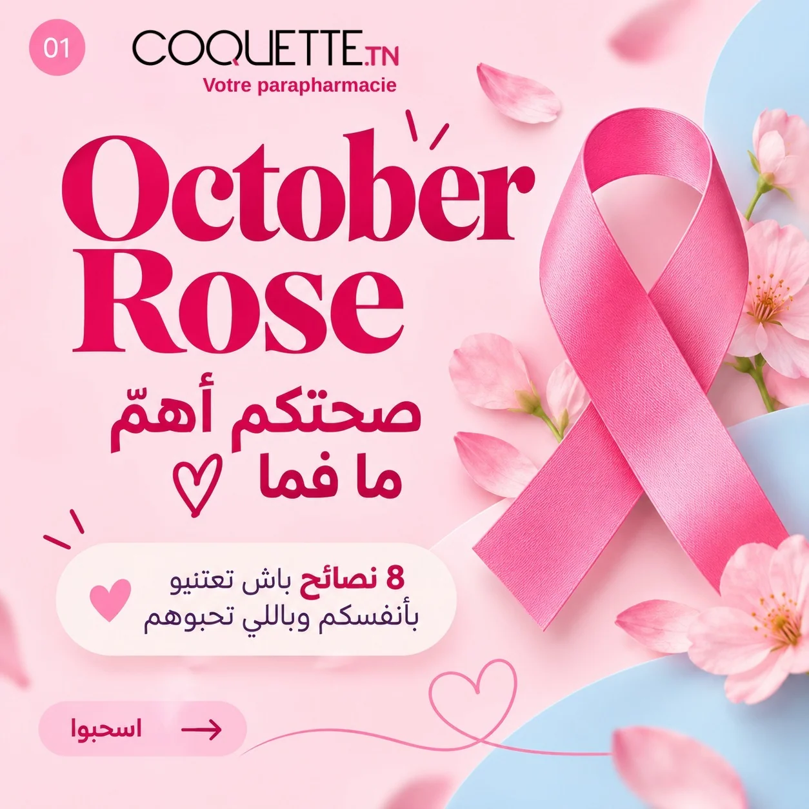
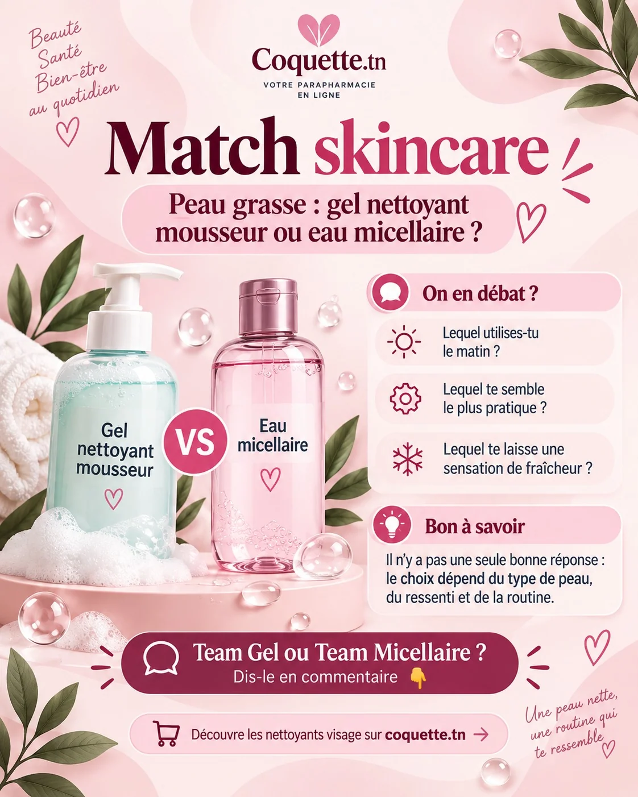
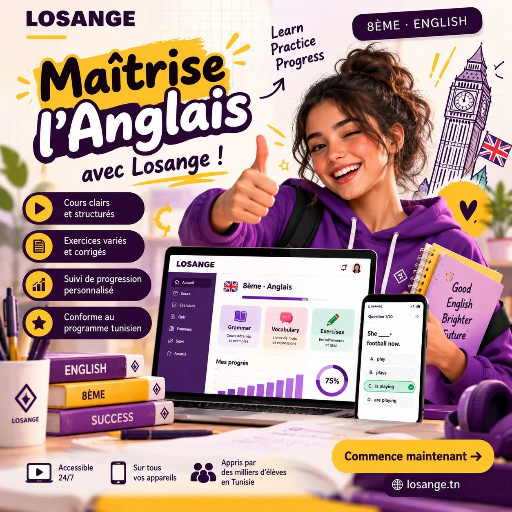
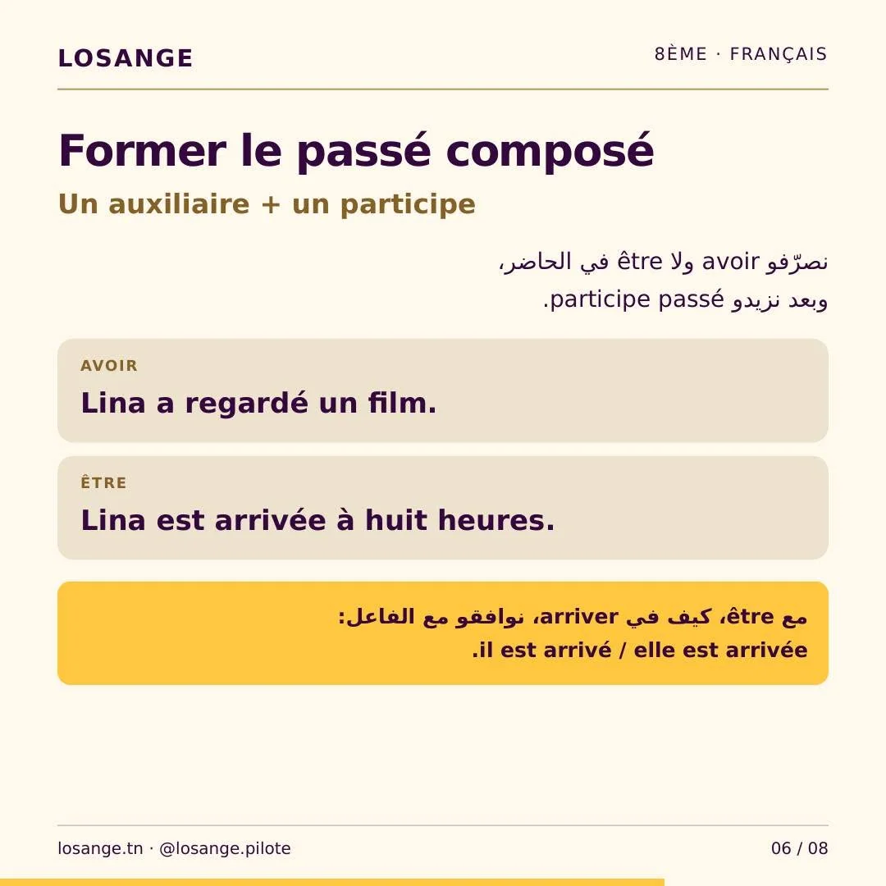
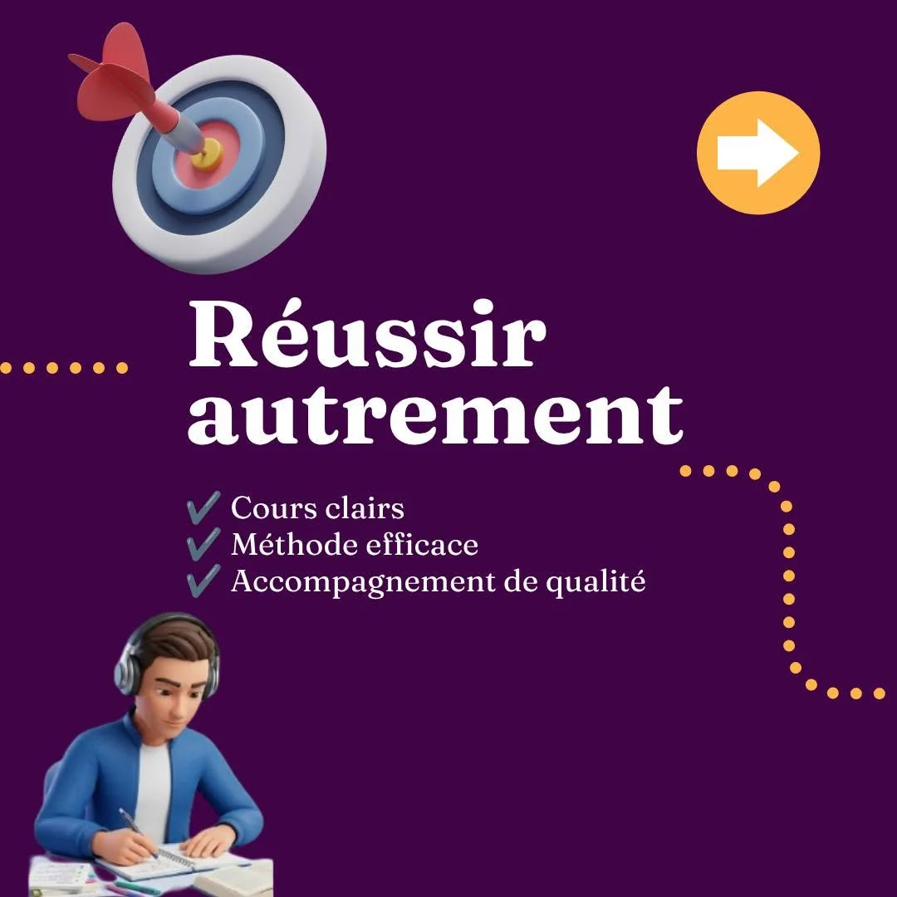
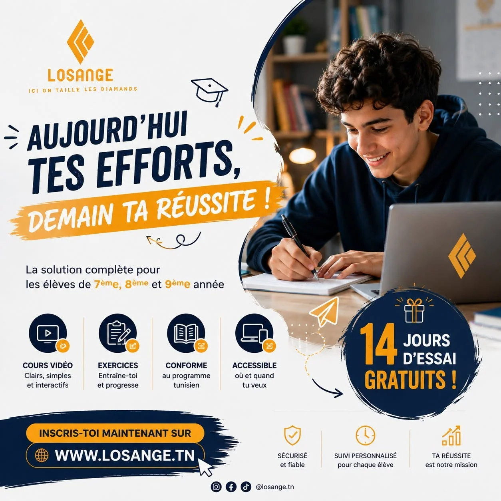

PORTFOLIO CRÉATIF / 2026STRATÉGIE × DESIGN × DIGITAL
DIGITAL MARKETING + CREATIVE THINKING
GOOD
IDEAS.
REAL WORK.
Je suis Saif Eddine Zelfani. J'associe stratégie digitale, contenu et création graphique pour imaginer des expériences de marque singulières.
SZ ©26 / DIGITAL CREATIVEFEATURED / COQUETTE.TN↗

 LOSANGE ↗
LOSANGE ↗
WHAT I DO ✦THINK.
DESIGN.
CONNECT.SOUSSE, TUNISIE ↗
DESIGN.
CONNECT.SOUSSE, TUNISIE ↗
STRATÉGIE MARKETING✳CONTENT CREATION✳SOCIAL MEDIA✳WEB & SEO
SCROLL TO EXPLORE ↓01 / THE HIGHLIGHTSTHE WORK
THE WORK
SPEAKS.
Des campagnes commerciales aux contenus pédagogiques, chaque projet est une nouvelle façon de raconter une idée.
TOUS LES PROJETS ↗02 / HOW I THINKCREATIVE
CREATIVE
BY DESIGN.
STRATEGIC
BY NATURE.
Un travail qui relie réflexion, message, identité visuelle et expérience utilisateur.
Comprendre.
Observer la marque, son public et son univers concurrentiel.
Structurer.
Clarifier l'idée, le message et le parcours de communication.
Créer.
Concevoir des contenus pertinents, cohérents et reconnaissables.
Améliorer.
Faire évoluer les propositions grâce aux retours et à l'analyse.
03 / PROJECT ARCHIVESELECTED
SELECTED
PROJECTS.
14 études de cas : contenus, campagnes, stratégie, web et audit.
14 PROJECTS / 05 DISCIPLINES
Octobre Rose : une campagne qui sensibilise
Visuels produits & campagnes commerciales

Conseils beauté & contenus éducatifs
Mathématiques : apprendre par le carrousel

English learning : les temps en exemples

Français : passé composé & imparfait

Identité de marque & campagnes éducatives

Engagement : memes, POV & prises de parole

Stratégie marketing & ligne éditoriale

Une stratégie TikTok conçue pour le secteur du voyage

Créations promotionnelles & communication visuelle

Expérience web & structure WordPress

Audit WordPress, UX, SEO & sécurité
RE / SEARCHOBSERVE
TO CREATE.↗
TO CREATE.↗
Benchmark concurrentiel & veille sectorielle
Aucun projet pour cette combinaison de filtres.
14 projets affichés

SAIF ZELFANI ↗
04 / BEHIND THE WORKMORE THAN
MORE THAN
A PRETTY
DESIGN.
Je suis diplômé en marketing digital de l'ISET Ksar Hellal. Mon parcours mêle stratégies Social Media, création graphique, analyse concurrentielle et expériences WordPress.
Social MediaMarketing DigitalGraphic DesignWordPressSEOContent StrategyCanvaAdobe Illustrator
VOIR MON PARCOURS EN PDF ↗05 / LET'S COLLABORATECREATIVE PARTNERSHIPS ↗
HAVE A
GOOD IDEA?
Une marque à faire rayonner, une campagne à imaginer ou un projet digital à lancer ? Parlons-en.
LET'S TALK ↗